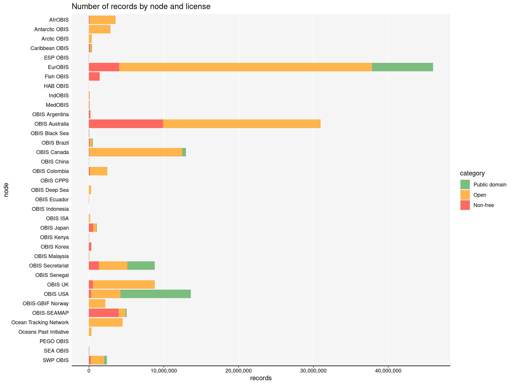
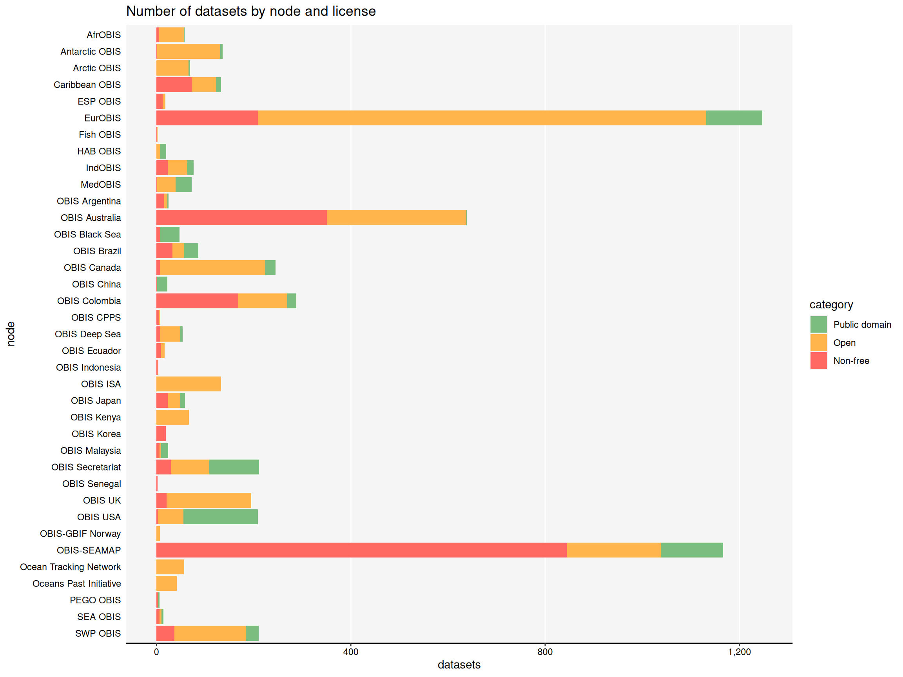

library(dplyr)
library(ggplot2)
library(robis)
library(scales)
library(knitr)
library(stringr)
library(tidyr)
report_theme <- theme(
axis.text = element_text(colour = "black"),
axis.line = element_line(linewidth = rel(1)),
axis.line.y = element_blank(),
axis.ticks = element_line(), axis.ticks.y = element_blank(),
panel.grid.minor = element_blank(),
panel.grid.major.y = element_blank(),
plot.background = element_blank(),
panel.background = element_rect(fill = "#f5f5f5", colour = NA),
legend.background = element_blank()
)
categories <- c("Public domain", "Open", "Non-free")OBIS dataset licenses
This is an overview of data licenses applied to OBIS datasets. In particular, it shows the distribution of public domain (CC0) and open licenses (CC BY, CC BY-SA), versus more restrictive licenses (such as CC BY-NC) across datasets and records. Creative Commons licenses other than CC0, CC BY, and CC BY-SA, are considered non-free because they impose restrictions on commercial and derivative use. The former licenses however, are conformant with the Open Knowledge Foundation’s Open Definition.
Nature Scientific Data recommends the use of CC0 or CC BY licenses. NCEI encourages the use of CC0 or CC BY for data produced by non-Federal entities.
Besides Creative Commons licenses, OBIS datasets also use other licenses such as:
- Open Government Licence - Canada (OGL-C)
- Open Data Commons Attribution License (ODC-By)
- ICES Data Policy
For the purpose of this analysis these licenses will be considered open, but the ICES Data Policy requires closer investigation as it mentions some exceptions on the use of CC BY.
Dataset metadata
Dataset metadata including licenses can be obtained from the OBIS API using the robis R package. Because the license field is free text, some cleanup is required.
full_datasets <- dataset()datasets <- full_datasets %>%
select(id, records, intellectualrights, node_name, title) %>%
mutate(
license = case_when(
str_detect(intellectualrights, "CC-BY\\)?[- ]4.0") ~ "CC BY",
str_detect(intellectualrights, "creativecommons.org/licenses/by/4.0") ~ "CC BY",
str_detect(intellectualrights, "CC-BY-?NC\\)?[- ]4.0") ~ "CC BY-NC",
str_detect(intellectualrights, "CC[- ]BY[- ]SA") ~ "CC BY-SA",
str_detect(intellectualrights, "CC[- ]BY[- ]NC[- ]SA") ~ "CC BY-NC-SA",
str_detect(intellectualrights, "CC[- ]BY[- ]NC[- ]ND") ~ "CC BY-NC-ND",
str_detect(intellectualrights, "CC[- ]BY[- ]ND") ~ "CC BY-ND",
str_detect(intellectualrights, "(?i)CC0") ~ "CC0",
str_detect(intellectualrights, "waived all rights") ~ "CC0",
str_detect(intellectualrights, "creativecommons.org/publicdomain/zero/1\\.0") ~ "CC0",
str_detect(intellectualrights, "Open Data Commons Attribution") ~ "Open Data Commons Attribution",
str_detect(intellectualrights, "(?i)unrestricted") ~ "CC0",
str_detect(intellectualrights, "(?i)^restricted") ~ "Restricted",
str_detect(intellectualrights, "remain property of") ~ "Restricted",
str_detect(intellectualrights, "data.gc.ca/eng/open-government-licence-canada") ~ "Open Government Licence - Canada",
str_detect(intellectualrights, "ICES Data Policy") ~ "ICES Data Policy",
TRUE ~ "Unknown"
)
) %>% mutate(
intellectualrights = gsub("\\\n", " ", intellectualrights),
category = case_when(
license == "CC0" ~ "Public domain",
license == "CC BY" ~ "Open",
license == "CC BY-SA" ~ "Open",
license == "Open Data Commons Attribution" ~ "Open",
license == "Open Government Licence - Canada" ~ "Open",
license == "ICES Data Policy" ~ "Open",
TRUE ~ "Non-free"
)
)Records and datasets by license
First create a table of all licenses as they appear in the metadata, along with the clean name, and statistics on records and datasets.
licenses <- datasets %>%
group_by(license, intellectualrights, category) %>%
summarise(datasets = n(), records = sum(records), .groups = "drop") %>%
arrange(desc(records))
kable(licenses %>% head(10))| license | intellectualrights | category | datasets | records |
|---|---|---|---|---|
| CC BY | This work is licensed under a Creative Commons Attribution (CC-BY) 4.0 License | Open | 2255 | 82395819 |
| CC BY-NC | This work is licensed under a Creative Commons Attribution Non Commercial (CC-BY-NC) 4.0 License | Non-free | 1694 | 18448881 |
| CC0 | To the extent possible under law, the publisher has waived all rights to these data and has dedicated them to the Public Domain (CC0 1.0) | Public domain | 633 | 18419358 |
| CC BY | This work is licensed under a Creative Commons Attribution (CC-BY) 4.0 License ICES Data Policy: https://www.ices.dk/data/guidelines-and-policy/Pages/ICES-data-policy.aspx | Open | 14 | 3782186 |
| CC0 | To the extent possible under law, the publisher has waived all rights to these data and has dedicated them to the Public Domain (CC0 1.0) | Public domain | 30 | 2632501 |
| CC BY | This work is licensed under a Creative Commons Attribution (CC-BY 4.0) License | Open | 202 | 2086421 |
| ICES Data Policy | Licence ICES Data Policy: http://www.ices.dk/marine-data/guidelines-and-policy/Pages/ICES-data-policy.aspx. | Open | 3 | 1139006 |
| Unknown | Non-free | 22 | 876511 | |
| Open Government Licence - Canada | rights: http://data.gc.ca/eng/open-government-licence-canada & http://www.canadensys.net/norms rights holder: Her Majesty the Queen in right of Canada, as represented by the Minister of Fisheries and Oceans | Open | 2 | 812304 |
| CC BY | This work is licensed under a Creative Commons Attribution (CC-BY) 4.0 License ICES data policy: https://www.ices.dk/data/guidelines-and-policy/Pages/ICES-data-policy.aspx | Open | 1 | 727047 |
Number of records
Here we look at the usage of (cleaned) licenses in terms of number of records.
license_stats <- licenses %>%
group_by(license, category) %>%
summarize(records = sum(records), datasets = sum(datasets), .groups = "drop") %>%
arrange(-records) %>%
mutate(
license = factor(license, levels = rev(reorder(license, records))),
category = factor(category, levels = categories),
records_percentage = records / sum(records) * 100,
datasets_percentage = datasets / sum(datasets) * 100
)
ggplot(data = license_stats) +
geom_bar(aes(y = license, x = records, fill = category), stat = "identity") +
geom_text(aes(y = license, x = records, label = paste0(round(records_percentage, 1), "%")), vjust = 0.5, hjust = -0.2) +
ggtitle("Licenses by number of records") +
scale_fill_manual(values = c("#7ABD7E", "#FFB54C", "#FF6961")) +
scale_x_continuous(
expand = expansion(mult = c(0, 0.1)),
labels = label_comma()
) +
report_themeNumber of datasets
Here we look at the usage of (cleaned) licenses in terms of number of datasets
ggplot(data = license_stats) +
geom_bar(aes(y = license, x = datasets, fill = category), stat = "identity") +
geom_text(aes(y = license, x = datasets, label = paste0(round(datasets_percentage, 1), "%")), vjust = 0.5, hjust = -0.2) +
ggtitle("Licenses by number of datasets") +
scale_fill_manual(values = c("#7ABD7E", "#FFB54C", "#FF6961")) +
scale_x_continuous(
expand = expansion(mult = c(0, 0.1)),
labels = label_comma()
) +
report_themeRecords and datasets by node and license
In this section we look at license categories by node.
Number of records
node_license_stats <- datasets %>%
separate_rows(node_name, sep = ",") %>%
group_by(node_name, category) %>%
summarise(datasets = n(), records = sum(records), .groups = "drop") %>%
mutate(
node_name = factor(node_name, levels = rev(sort(unique(node_name)))),
category = factor(category, levels = categories)
)
ggplot(data = node_license_stats) +
geom_bar(aes(y = node_name, x = records, fill = category), stat = "identity") +
scale_fill_manual(values = c("#7ABD7E", "#FFB54C", "#FF6961")) +
scale_x_continuous(
labels = label_comma()
) +
ylab("node") +
ggtitle("Number of records by node and license") +
report_theme
Number of datasets
ggplot(data = node_license_stats) +
geom_bar(aes(y = node_name, x = datasets, fill = category), stat = "identity") +
scale_fill_manual(values = c("#7ABD7E", "#FFB54C", "#FF6961")) +
scale_x_continuous(
labels = label_comma()
) +
ylab("node") +
ggtitle("Number of datasets by node and license") +
report_theme